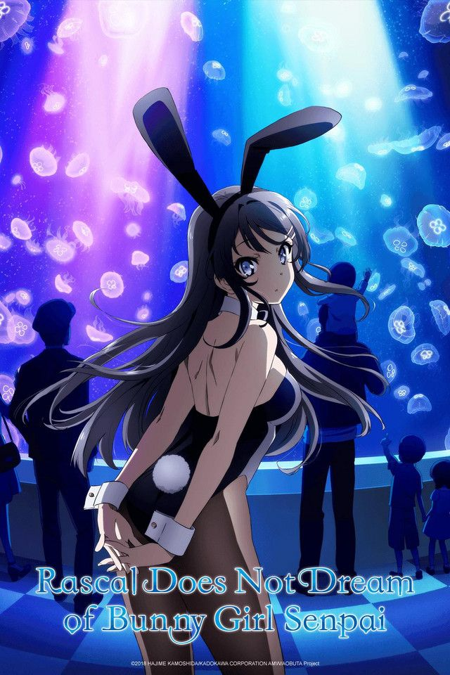

Seishun Buta Yarou wa Bunny Girl Senpai no Yume wo Minai

Synopsis
The rare and inexplicable Puberty Syndrome is thought of as a myth. It is a rare disease which only affects teenagers, and its symptoms are so supernatural that hardly anyone recognizes it as a legitimate occurrence. However, high school student Sakuta Azusagawa knows from personal experience that it is very much real, and happens to be quite prevalent in his school.
Mai Sakurajima is a third-year high school student who gained fame in her youth as a child actress, but recently halted her promising career for reasons unknown to the public. With an air of unapproachability, she is well known throughout the school, but none dare interact with her—that is until Sakuta sees her wandering the library in a bunny girl costume. Despite the getup, no one seems to notice her, and after confronting her, he realizes that she is another victim of Puberty Syndrome. As Sakuta tries to help Mai through her predicament, his actions bring him into contact with more girls afflicted with the elusive disease.
Information
Type: TV
Episodes: 13
Status: Finished Airing
Aired: Oct 4, 2018 to Dec 27, 2018
Premiered: Fall 2018
Broadcast: Thursdays at 02:20 (JST)
Producers: Aniplex, Tokyo MX, Hakuhodo DY Music & Pictures, Nagoya Broadcasting Network, BS11, ABC Animation, Kadokawa
Licensors: Aniplex of America
Studios: CloverWorks
Source: Light novel
Genres: Comedy, Romance, School, Supernatural
Duration: 24 min. per ep.
Rating: PG-13 - Teens 13 or older
Related Animes
Adaptation: Seishun Buta Yarou Series
Sequel: Seishun Buta Yarou wa Yumemiru Shoujo no Yume wo Minai
Side story: Seishun Buta Yarou wa Bunny Girl Senpai no Yume wo Minai Picture Drama
Back to Main Page